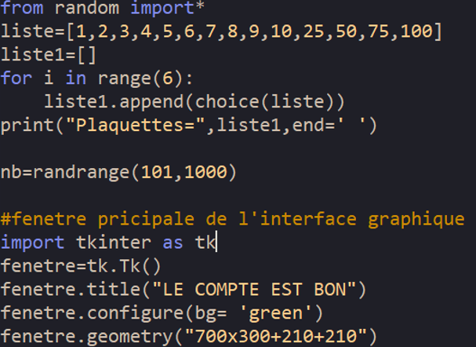
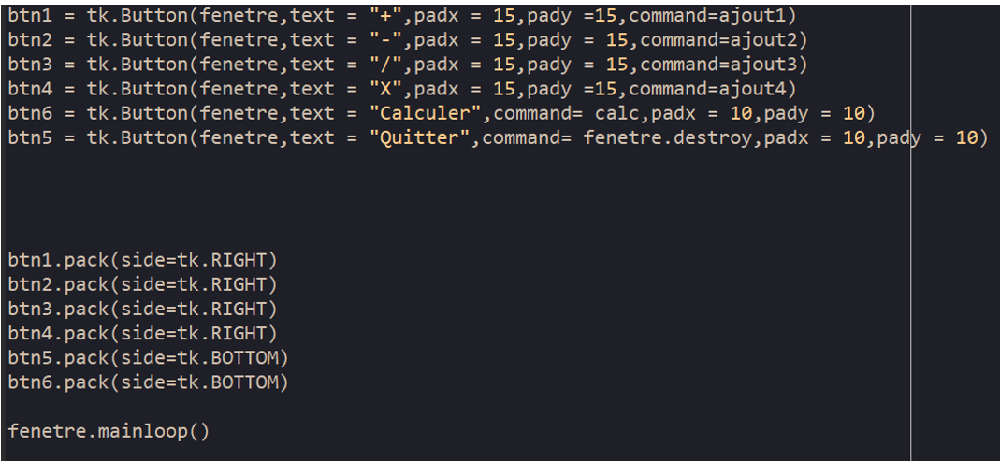

Pour les plus curieux, voici une présentation plus détailée du programme python du compte est bon.
Dans cette page, nous verrons ce que chaque fonction fait dans le programme, cependant nous ne parlerons pas de chaque ligne de code en détail car cela prendra beaucoup trop de temps., ci-dessous des images du programme :

Cette prmiere partie contient le tirage des 6 nombre au hasard et du nombre au trouver entre 101 et 999 puis la creation de la fenetre principale de l'interface graphique de tout ce qui est couleur et taille de la fenetre.
La suite du programme permet le calcul est le choix de l'operateur (+;-;/;x)et des nombres [nombre1,nombre2]puis le placement sur les premieres cases vide qui seront remplie au cours du jeux.

Enfin la fin du progrmme et selement consacrer a la creation de l'interface graphique comme a la creation des boutton ,la couleur des boutton ou l'emplacement des different element du jeu en general l'esthetique du jeu.Pour permetre a l'utilisateur un certain confort et une agreable partie.
Si vous voulez voir le code et le teste, vous pouvez le voir ici
Au premier regard le programme peut avoir l'aire d'etre long est complique mais ne vous enfaite pas il contient surtout des repetition pour la creation des differentes cases et leurs remplisages .
Les Difficultés rencontrées lors de ce projet
Tout d'abord je tiens a dire que la programation de se jeux a etait un vrai exercice d'application du travail effectuer depuis le debut de l'anne en NSI.
Premièrement j'ai voulu faire une interface graphique agreable et fonctionnel ceux qui n'est pas facile pour avoir un jeux ressemblant a la realité
j'ai put remarqué que la programation est un travail long et difficile et qu'il me manqué de temps pour obtenir le résultat attendut.
Deuxièmement voir trop grand aussi,avoir un fond coloré n'a pas été vraiment le gros problème etait le fait de mettre des bouttons qui etait fonctionnel.
Enfin j'ai ressentie une vrai amelioration dans mon travail en NSI ce qui m'as permis de comprendre les problemes que ressentes les programmeur ou les concepteur de jeux pour crée un jeux
En esperant que notre projet est notre site vous a plus mercie de votre viste A Bientot